Beckmann World Models
Direct Terminal-Map Learning for
One-Step Action-Conditioned Prediction

Qualitative results
PushTSpatial feature supervision
Robomimic CanSpatial feature supervision
Bridge-V2Recovery features · 500 updates
RT-1Recovery features · 1,000 updates
Selected examples from the evaluated models. RGB: four observed and 60 predicted frames. Native: eight-frame autoregressive chunks, each starting from four recorded frames; VAE-reconstructed references.
| Model | t = 4 | t = 23 | t = 43 | t = 63 |
|---|---|---|---|---|
| Ground truth | ||||
| DriftWorld | 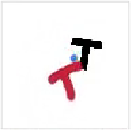 |
|||
| MSE U-Net | ||||
| GPC | 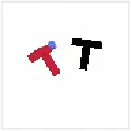 |
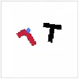 |
||
| AVDC | ||||
| BWM + spatial | 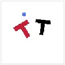 |
| Model | t = 4 | t = 23 | t = 43 | t = 63 |
|---|---|---|---|---|
| Ground truth | 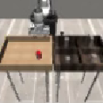 |
|||
| DriftWorld | 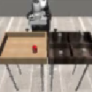 |
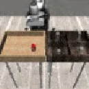 |
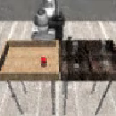 |
|
| MSE U-Net | 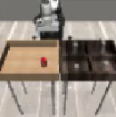 |
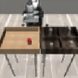 |
||
| GPC | 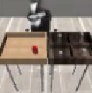 |
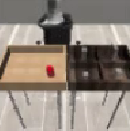 |
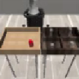 |
|
| AVDC | 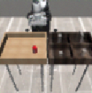 |
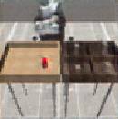 |
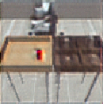 |
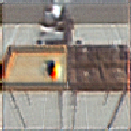 |
| BWM + spatial | 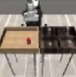 |
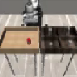 |
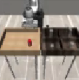 |
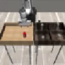 |
Quantitative results
RGB prediction
| Model | PushT | Robomimic Can | ||||
|---|---|---|---|---|---|---|
| MSE ↓ | Motion MSE ↓ | LPIPS ↓ | MSE ↓ | Motion MSE ↓ | LPIPS ↓ | |
| MSE U-Net | 0.0303 | 0.4008 | 0.0804 | 0.0051 | 0.0544 | 0.0104 |
| DriftWorld | 0.0314 | 0.4093 | 0.0790 | 0.0104 | 0.0769 | 0.0682 |
| GPC | 0.0630 | 1.4241 | 0.1609 | 0.0276 | 0.3103 | 0.0589 |
| AVDC | 0.0684 | 1.1840 | 0.1860 | 0.0400 | 0.2644 | 0.1194 |
| BWM + spatial | 0.0098 | 0.1247 | 0.0280 | 0.0022 | 0.0242 | 0.0056 |
388 PushT and 30 Can episodes. Four observed and 60 autoregressive predictions at 96 × 96 resolution.
PushT policy rollouts and planning
| World model | Planning IoU ↑ | Policy correlation ↑ | Policy IoU error ↓ |
|---|---|---|---|
| DriftWorld5-epoch baseline | 0.709 | 0.857 | 0.031 |
| MSE U-Net5-epoch baseline | 0.695 | 0.915 | 0.012 |
| GPC diffusion5-epoch baseline | 0.615 | 0.366 | 0.513 |
| BWM + spatialSpatial epoch 30 | 0.721 | 0.928 | 0.010 |
Planning: GPC-RANK on 50 fixed evaluation seeds. Policy rollouts: seven frozen policies × 300 paired trials in the world model and simulator; correlation is Pearson r and error is mean absolute IoU difference.
Native video prediction
| Model | Bridge-V2 | RT-1 | Calls per frame | ||||
|---|---|---|---|---|---|---|---|
| SSIM ↑ | PSNR ↑ | LPIPS ↓ | SSIM ↑ | PSNR ↑ | LPIPS ↓ | ||
| Matched subset · 2,078 Bridge-V2 and 2,041 RT-1 training episodes | |||||||
| DriftWorld Population drifting objective | .813 | 21.919 | .104 | .814 | 22.419 | .129 | 1 |
| MSE U-Net | .813 | 22.439 | .166 | .815 | 23.026 | .179 | 1 |
| GPC | .642 | 19.932 | .335 | .694 | 20.692 | .294 | 3 |
| AVDC | .746 | 19.595 | .159 | .749 | 20.269 | .175 | 100 |
| BWM spatial | .796 | 22.130 | .155 | .802 | 23.147 | .166 | 1 |
215 Bridge-V2 and 198 RT-1 validation episodes. Eight-frame autoregressive chunks, each starting from four recorded frames. Metrics use VAE-reconstructed references.
Native video prediction · full-data refinement
The new recipe adds feature supervision to recovery predictions while retaining one model call per frame. These runs use the full training data and are reported separately from the matched-subset comparison above.
| Model | SSIM ↑ | PSNR ↑ | LPIPS ↓ | FID ↓ | FVD ↓ |
|---|---|---|---|---|---|
| RT-1 · 86,634 training episodes · 198 validation episodes | |||||
| BWM population Starting model · epoch 70 | 0.884 | 27.354 | 0.092 | 19.77 | 167.50 |
| BWM population Original objective continued | 0.884 | 27.341 | 0.093 | 20.56 | 172.89 |
| BWM + recovery features | 0.886 | 27.271 | 0.061 | 8.05 | 104.91 |
The two RT-1 continuations start from the same model and use the same added-update budget. All rows use the validation protocol above and one model call per frame. Recovery feature supervision lowers LPIPS, FID and FVD, with a small PSNR decrease; contact and motion errors remain.